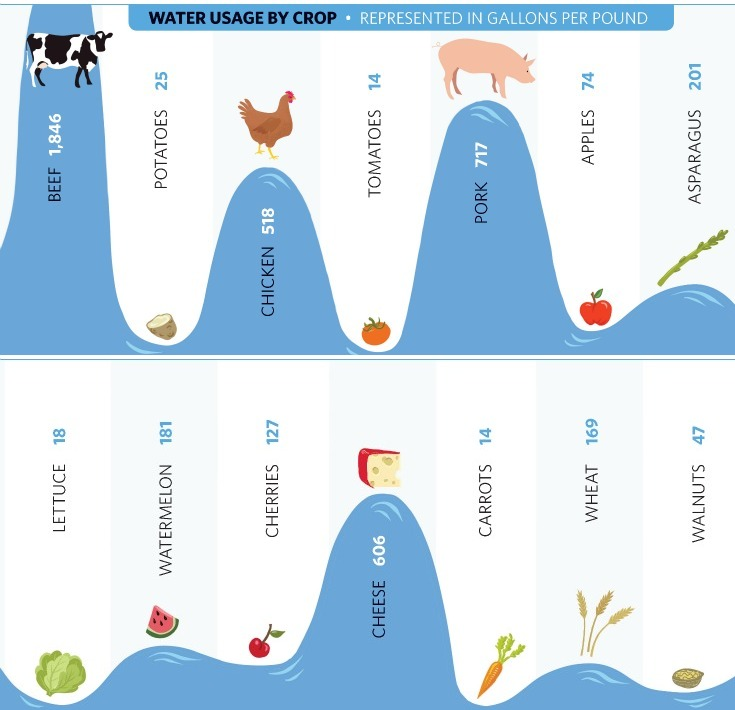

How to eat better ?¶
Some facts¶
Animal welfare¶
Raised animals are living in unacceptable conditions.
For example :
- 83% of broilers are raised indoor;
- 68% of chikens and 99% of rabbits are caged;
- 20% of raised pigs die before they are killed.
(source : viande.info)
Vegan ? What is it ? Is that something I can eat? (source: tumblr.com - carlvegandude)
In the dairy industry, males are useless.
However, females must have calves to give milk.
Only three months after they gives birth she will be fertilized by force.
Males are then killed at birth, in order to not feed them.
Cows in dairy industry are exhausted 5 or 6 so they can’t produce milk anymore.
They will be killed (pregnent, most of the time) and made into chopped steaks.
Did you know that 70% of beef came from dairy cows ?
In the wild, they can live 20 years.
(source : ouestfrance)
In the duck foie gras industry, ducks are force-fed all their lives.
The beak of the males are cut, in order to prevent breeding-related attacks while females are crushed because their liver is too small.
In some farms, they are attached, with the abdomen wide opened in order to check the size of their liver.
Once it’s big enough, ducks are then killed.
Duck foie gras do not kill only force-fed ducks.

Everybody raise your hands ! (source: LeMonde)
Ecology¶
A new report from the FAO says that breeding is one of the main causes of environmental problems like :
- global warming;
- land degradation;
- air and water pollution;
- loss of biodiversity.
Breeding is the cause of more than 16% greenhouse gas emission according to the IPCC Fifth Assessment Report.
Agriculture needs more or less water depending on its type of production. This depends on the physiological needs of plants, animals and food of these animals.
To these water needs of organisms are added those of food processing processes, such as water used to clean slaughterhouses, for example.
All those water needs are called «virtual water», which means the total amount of water to produce something.
That being said, animals raised for their meat consume far more water than any vegetable for the same quantity of produced food.

What amount of water is needed to grow your food ? (source : ediblemadison.com)
We could produce huge quantities of vegetables. I will never protest about carrots abuse !
Ethical eating¶
Actually, there are so many alternatives like chickpea, seitan, tempeh, tofu, amarante, split peas, coral lentils, soya, quinoa, and more…
But the point is not about meat. It’s about fair food.
For example, you can replace meat by tofu, that is actually made of soya and is a good protein source.
But the fact is that Amazonia is deforested in order to grow gigantic amounts of soya.
Not fair…
Amazonia is actually deforested in order to grow gigantic amounts of soya (source: greenpeace.fr)
Some brands of chocolate-based products like Mars or Nestlé use slave children in West-Africa to collect cocoa.
Do you really believe that chocolate bars only cost 1¤ ?
Not fair…

Just a child, making our chocolate bar (source: TheSpiritScience.net)
Jean-Baptiste Malet wrote a book named «L’empire de l’or rouge» which talks about tomatoes.
Most of processed tomatoes we eat are grown in China and are collected by children who are actually enslaved.
In the south of Italy, a slave association named «caporalato» hire illegal immigrants to cultivate and collect tomatoes.
This association have created ghettos in which glandestine immigrants live.
Those immigrants are paid with local money that can only be spent in these ghettos.
They are emprisonned and forced to work.
And that’s what we are actually eating, by eating pizzas, ketchup, etc…
Not fair…
source : francetvinfo
Health¶
More and more specialists are accusing industrial food to contain too much fat, sugar, salt and to be too poor in vegetables.
Junk food could be, for some of these specialists, responsible of these numbers :
- 8 million obese people
- 500,000 people suffering of cardiac insufficiency
- 2 million people suffering from diabete
- 25% cancers are poor eating habits related
For example :
- consuming too much fat directly increase risks of heart disease;
- cholesterol blocks the arteries and can cause infarction;
- consuming too much salt increases risk of high blood pressure;
- consuming too much sugar increase the risk of diabetes.
Actually, more than 200,000 people are dying every year in France because of poor eating habits, and most of the time, it’s about eating meat.

Triple bypass burger ! (source : fitneass.com)
To not eating (or eat less) meat could contribute to a healthier life for everybody, including animals.
What should we do to make things better ?¶
First, we could eat less meat.
Harvard school of public health recommends to eat around 90g of meat per day, instead of the average 180g consumed today.
They also recommend to restrict the consumtion of dairy products.
Most of us are eating an average of 2.5 servings per day in Western countries.
Few years ago, when a butcher received a cow, he didn’t order another one until the first it was entierely sold-out.
Today, we can buy only chicken legs, despite the fact that chikens only have two.
We can also buy only ribs of beef, etc…
We could also favor local products.
Actually, the goal is not to make actual farmers produce more, but to have more farmers, so we could eat better products.
Everybody should be able to say where their food comes from.
And well, it’s also good from an economic point of view.
Also, In france, a child can’t work before 16 years old.
By boycotting several industry-made food, we will protect children of other countries that do not have laws to protect them.
And above all, it’s important to understand that meat, fish, eggs or even milk is not needed for our health.
So we can chose to not eat these products, or to reduce our consumption.
We could also eat only seasonal vegetables : There are no tomatoes or strawberry during Winter !
References¶
- IPCC (intergovernemental panel on climate change), 2014: Climate Change 2014: Synthesis Report. Contribution of Working Groups I, II and III to the Fifth Assessment Report of the Intergovernmental Panel on Climate Change [Core Writing Team, R.K. Pachauri and L.A. Meyer (eds.)]. IPCC, Geneva, Switzerland, 151 pp. (↑)